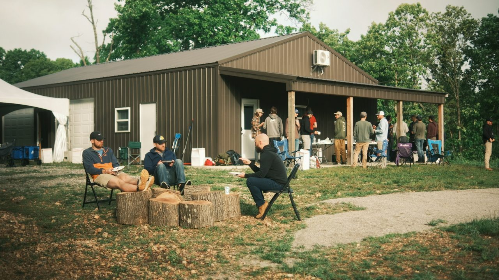

The research case for father presence in nine minutes. What the research says your kids get when you show up, and what it costs when you don't.
Dr. Ken Canfield founded the National Center for Fathering and built the research base behind the Keystone framework. Since 1990, thousands of fathers studied, one conclusion: presence is a trainable skill. He is a father of five and a grandfather, and he teaches like it.